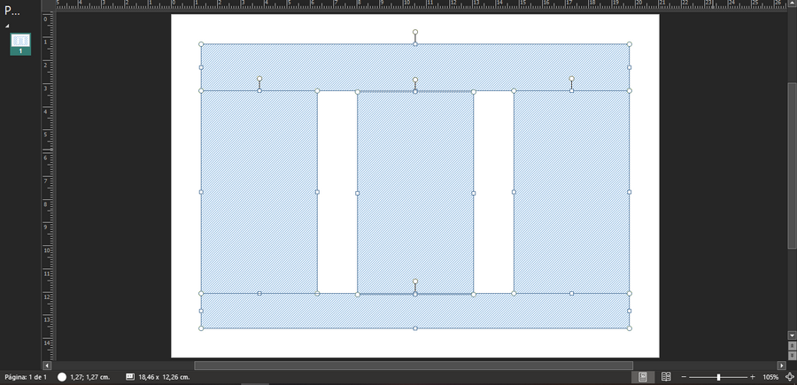

As caixas de texto em aplicações de editoração como CorelDraw, Publisher e Indesign permitem inserir texto no layout e formatá-lo com mais opções do que um texto corrido na maioria dos editores de texto, elas podem ser independentes ou fazer parte de um fluxo de texto, no qual o texto de uma caixa flui para outra e assim por diante.
Faremos um breve tutorial para aprender como criar e formatar caixas de texto, para tal você criará cinco caixas de texto como demonstra o esquema abaixo, sendo uma para o título, uma para o rodapé, e duas para o corpo do texto.
1. Abra o Publisher.
2. Escolha mais tamanhos de papel e selecione A5 (Paisagem).
3. Clique no menu Inserir → Desenhar Caixa de Texto.
4. Desenhe um caixa de texto aproximadamente como o retângulo no topo da figura.
5. No menu Formato da Forma, defina a altura da caixa de texto como 2cm.
6. Utilizando as alças, posicione a caixa de texto no topo e encaixe nas guias laterais. Não ultrapasse as guias azuis que delimitam a margem.
7. Repita o processo para a caixa de texto do rodapé, mas defina a altura como 1,5cm.
8. As caixas de texto do corpo do documento terão 5cm de largura e basta serem encaixadas no espaço entre a caixa do topo e da base e alinhadas nas laterais e no centro. O Publisher alinha os objetos automaticamente aos pontos próximos.
Quando temos várias caixas de texto que conterão o mesmo conteúdo, podemos definir um fluxo de texto para que possamos escrever e formatar de forma que o texto flua entre elas, para tal:
1. Clique na primeira caixa de texto, em seguida clique com o botão direito.
2. Selecione Criar vínculo com a Caixa de Texto.
3. Agora clique na segunda caixa de texto.
4. Clique com o botão direito sobre a segunda caixa de texto e selecione Criar vínculo com a Caixa de Texto.
5. Clique na terceira caixa de texto.
Agora vamos inserir o texto. O que utilizaremos neste tutorial é o poema de Pablo Neruda, O Monte e o Rio. O título deve ser escrito na caixa de texto do topo, o corpo deve ser inserido na caixa de texto da esquerda e o nome na caixa do rodapé. Não se preocupe com formatação por enquanto, faremos isso logo depois.
Lembre-se, o corpo do texto deve começar a ser inserido na primeira caixa, e não é preciso utilizar quebras de linha, pois assim que o espaço da primeira caixa acabar o cursor automaticamente passará para a segunda, e assim por diante.
1. O primeiro passo é retirar a hifenização automática que como você notou quebra várias palavras no fim da linha. Para tal, clique na primeira caixa de texto do corpo do texto.
2. Clique no menu Caixa de Texto.
3. Do lado esquerdo da Faixa de Opções, clique em Hifenização.
4. Desmarque a opção Hifenizar automaticamente este texto.
O próximo passo é alinhar o texto dentro da caixa de texto, o que faremos não pela formatação de parágrafo e sim da própria caixa de texto. Para tal faça isso:
5. Clique na caixa de texto do título.
6. Clique no menu Caixa de Texto.
7. No conjunto Alinhamento, clique em Centralizar, o ícone do meio.
8. Clique na caixa de texto do rodapé, e no conjunto Alinhar selecione Alinhar à parte inferior direita, o último ícone.
9. Selecione o título. No menu Página Inicial, defina como Calibri 30 negrito.
10. Clique no ícone de cor do texto e escolha uma das opções de Cores do Esquema. Você entenderá depois porque selecionar uma delas.
11. Selecione o corpo do texto e formate como Garamond 15, escolha uma das Cores do Esquema também.
12. Selecione o rodapé e defina como Calibri 20 negrito. Escolha uma das Cores do Esquema.
Antes de vermos quantas opções de design temos para a nossa arte, vamos definir o plano de fundo, criar um efeito no título, e dar uma ênfase no texto do corpo.
1. No menu Design de Página, clique em Plano de Fundo, no lado direito da Faixa de Opções, e escolha um plano fundo gradiente.
2. O plano de fundo agora fará parte do esquema de cores de nossa paleta.
3. Daremos uma pequena ênfase no texto do poema aplicando uma sombra leve. Para aplicar efeitos de sombra, brilho e reflexo no Publisher, utilizamos o menu Formato da Forma.
4. Selecione todo o texto do corpo, clique no menu Formato da Forma. Clique em Efeitos de Forma, que se localiza no conjunto Estilos de Forma.
5. Selecione Sombra.
6. Em Sombra Externa, escolha a primeira opção.
7. Faremos o mesmo com o título, só que em vez de escolher um efeito, escolheremos um dos estilos de caixa de texto que se encontram logo ao lado. Escolha um estilo que contraste com a cor que você escolheu para a fonte.
8. Agora, para ver as opções de paleta que podemos aplicar, clique no menu Design de Página.
9. Em Esquemas, você verá vários conjuntos de paletas de cor, clique sobre alguns deles e veja qual se adequa melhor à sua arte. As possibilidades são muitas!